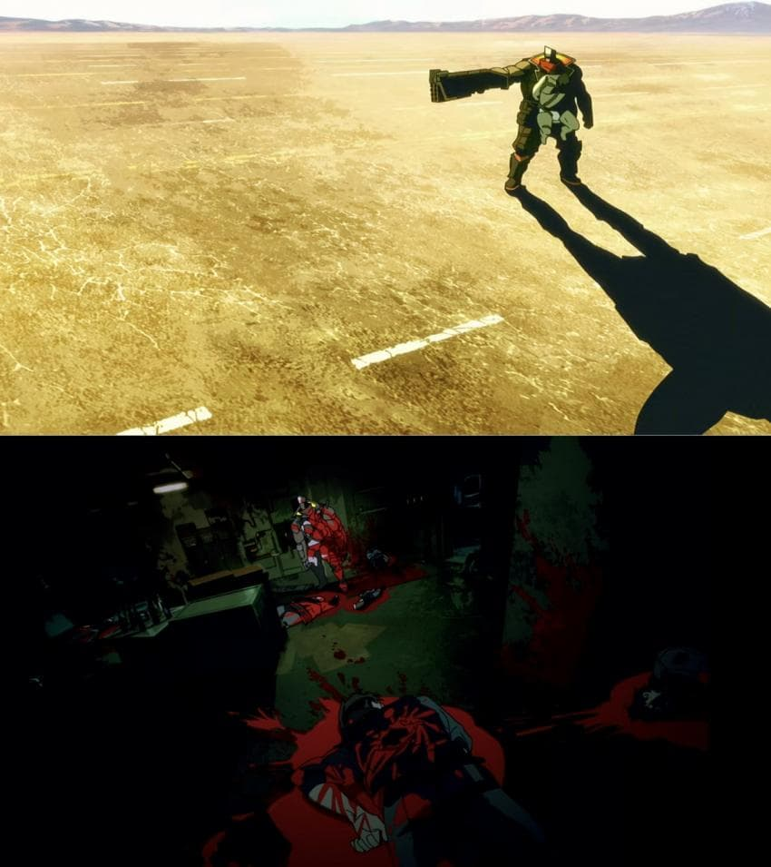
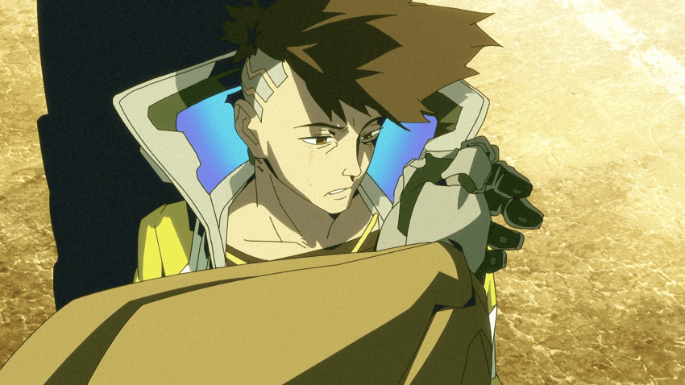
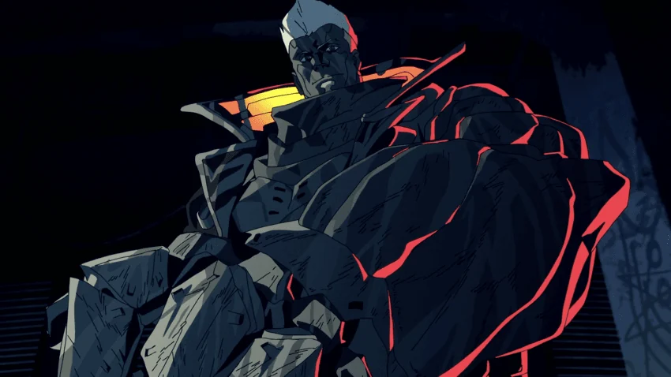
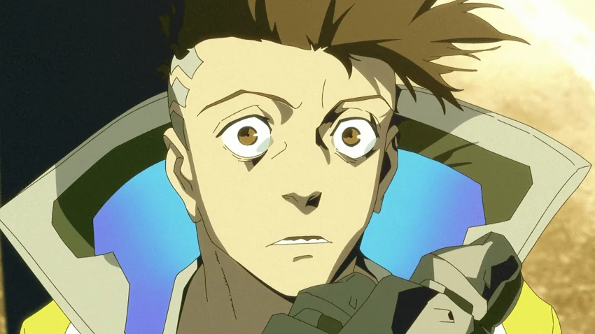
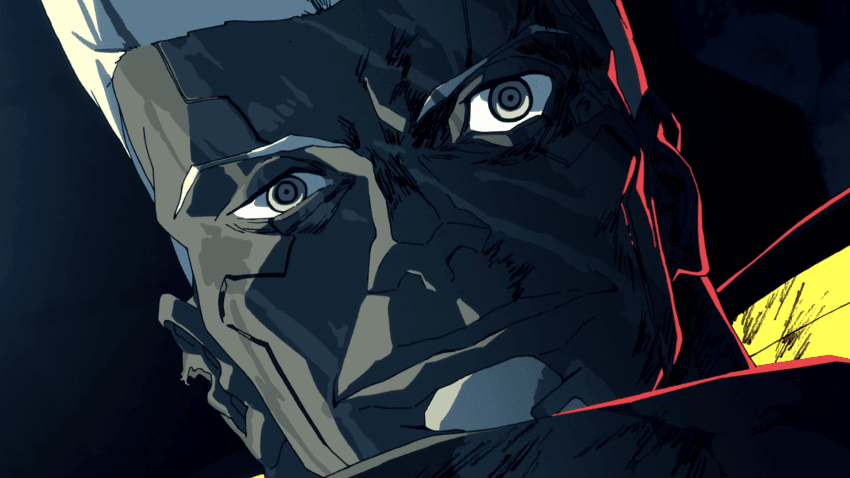
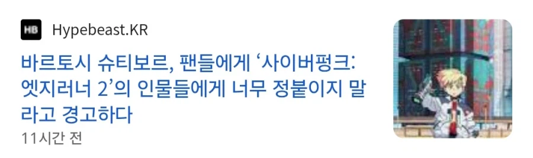

엣지러너 1 시절 개쩌는 연출을 보여줬던 엣지러너2 감독
그 언어여도 어울리면서 존나 어두운게 보인 ost

정 주지 마쇼 ㅋㅋㅋㅋㅋ
이걸 어떻게 기대 안함 ㅋㅋㅋㅋㅋㅋ
심지어 중간 ost에 나온 영상 비극적인건줄 알았는데 막상 나와보니 에어팟 한쪽 찾아야지 ㅇㅈㄹ하면서 뛴거였음 ㅋㅋㅋ





엣지러너 1 시절 개쩌는 연출을 보여줬던 엣지러너2 감독
그 언어여도 어울리면서 존나 어두운게 보인 ost

정 주지 마쇼 ㅋㅋㅋㅋㅋ
이걸 어떻게 기대 안함 ㅋㅋㅋㅋㅋㅋ
심지어 중간 ost에 나온 영상 비극적인건줄 알았는데 막상 나와보니 에어팟 한쪽 찾아야지 ㅇㅈㄹ하면서 뛴거였음 ㅋㅋㅋ
영상미는 좋은데 인물이 다 따로 놀아서 아쉬워
아무리 봐도 그냥 낚을려고 일부러 저렇게 입턴것 같음
AI랑 사랑에빠진거 개연이 없어
어떤 한장면도 기억에 남는 장면이 없는둣
난 탈리아 울면서 뛰어가는 장면
처음에 존나 명장면일 줄 알고 기대 잔뜩했었는데
직접 보니깐 그냥 지나가는 장면 1이었음
ㅅㅂ 같은 감독임?
그냥 장르 드라마임... 액션 느와르 싸이버펑크틱한 그런거 개좃도없음 지루한거 일본특 인물 내면만 어쩌고 저쩌고 계속 주제로하는거 보기싫은사람은 비추
엣지러너1은 하루만에 다봤는데
2편은 다보는데 2주걸렸다
개씹노잼이라 보다끄고 보다끄고
5화까지 보다가 중간에 끔.. 진짜 아오.. 시간아까워